Part II Analysis: Race/Ethnicity
Data Sample:
Juvenile intake complaints with intake dates from July 1, 2015 - June 30, 2021
Dispositions – all dispositions for the intake complaints in the sample.
Research Question:
Conduct a front-end system assessment from intake through petition for all complaints 2016-2021.
Methods:
We will conduct a descriptive analysis of the front end of the system from intake through petition, provide unadjusted counts, RRI’s and means tests where applicable, by race, sex, offense, risk, CSU, and year for:
Complaints
Intake decisions: divert, resolve, petition, other
Average LOS on diversion
Diversion completions: successful, unsuccessful, other
Dispositions on petitioned cases
Cohort: All complaints from 2016-2021
Tables (Descriptives)
Table 1: Intake Decisions by Race/Ethnicity
Note: I am currently coding the following intake decisions as ‘Diverted’: “UNSUCCESSFUL DIVERSION/PETITION FILED” (code of ‘18’), “SUCCESSFUL DIVERSION” (code of ‘20’), “UNSUCCESSFUL DIVERSION/NO PETITION FILED” (code of ‘21’), and “REQ’D TO PARTICIPATE-DIVERSION” (code of ‘7’). All other intake decisions are coded as “Not Diverted”. See preliminary coding of intake decisions in Intake Complaints, Intake Decision Descriptions table on codebook page in sample descriptives tab
| Race/Ethnicity | All Complaints (N) | All Complaints (column %) | Complaints Petitioned (N) | Complaints Petitioned (row %) | Complaints Diverted (N) | Complaints Diverted (row %) | Complaints Resolved/Dismissed (N) | Complaints Resolved/Dismissed (row %) | Other (N) | Other (row %) |
|---|---|---|---|---|---|---|---|---|---|---|
| American Indian | 197 | 0.1% | 124 | 62.9% | 46 | 23.4% | 18 | 9.1% | 3 | 1.5% |
| Asian | 1,949 | 1.0% | 1,091 | 56.0% | 443 | 22.7% | 210 | 10.8% | 31 | 1.6% |
| Black | 81,971 | 41.1% | 57,693 | 70.4% | 12,320 | 15.0% | 7,193 | 8.8% | 1,589 | 1.9% |
| Hispanic | 21,495 | 10.8% | 14,247 | 66.3% | 3,928 | 18.3% | 1,903 | 8.9% | 394 | 1.8% |
| White | 80,498 | 40.3% | 53,598 | 66.6% | 17,357 | 21.6% | 5,925 | 7.4% | 730 | 0.9% |
| Other | 12,135 | 6.1% | 7,102 | 58.5% | 2,895 | 23.9% | 1,437 | 11.8% | 139 | 1.1% |
| NA | 1,406 | 0.7% | 679 | 48.3% | 422 | 30.0% | 223 | 15.9% | 20 | 1.4% |
| Overall | 199,651 | 100.0% | 134,534 | 67.4% | 37,411 | 18.7% | 16,909 | 8.5% | 2,906 | 1.5% |
Table 2: Disposition Outcomes by Race/Ethnicity
Note: The preliminary options for grouping dispositions that I am using are: Detention, Commitment, Probation/Supervision, Deferral, Community Service, Fine, No further action/none, Restitution, Other. See the Disposition, Preliminary Disposition Groupings table on the codebook page in the sample descriptives tab for a full list of each disposition and I’ve grouped it.
| Race/Ethnicity | All Disposed Complaints (N) | All Disposed Complaints (column %) | Detention (N) | Detention (row %) | Commitment (N) | Commitment (row %) | Probation/Supervision (N) | Probation/Supervision (row %) | Deferral (N) | Deferral (row %) | Community Service (N) | Community Service (row %) | Fine (N) | Fine (row %) | No further action/none (N) | No further action/none (row %) | Restitution (N) | Restitution (row %) | Other (N) | Other (row %) |
|---|---|---|---|---|---|---|---|---|---|---|---|---|---|---|---|---|---|---|---|---|
| American Indian | 197 | 0.1% | 5 | 2.5% | 3 | 1.5% | 49 | 24.9% | 11 | 5.6% | 17 | 8.6% | 2 | 1.0% | 3 | 1.5% | 6 | 3.0% | 4 | 2.0% |
| Asian | 1,949 | 1.0% | 39 | 2.0% | 11 | 0.6% | 405 | 20.8% | 52 | 2.7% | 142 | 7.3% | 12 | 0.6% | 17 | 0.9% | 31 | 1.6% | 68 | 3.5% |
| Black | 81,971 | 41.1% | 4,546 | 5.5% | 2,120 | 2.6% | 22,371 | 27.3% | 3,398 | 4.1% | 5,958 | 7.3% | 556 | 0.7% | 1,067 | 1.3% | 2,429 | 3.0% | 3,228 | 3.9% |
| Hispanic | 21,495 | 10.8% | 1,165 | 5.4% | 231 | 1.1% | 5,281 | 24.6% | 509 | 2.4% | 1,225 | 5.7% | 265 | 1.2% | 314 | 1.5% | 374 | 1.7% | 679 | 3.2% |
| White | 80,498 | 40.3% | 3,382 | 4.2% | 618 | 0.8% | 21,576 | 26.8% | 3,046 | 3.8% | 7,319 | 9.1% | 949 | 1.2% | 543 | 0.7% | 1,850 | 2.3% | 3,902 | 4.8% |
| Other | 12,135 | 6.1% | 352 | 2.9% | 85 | 0.7% | 2,382 | 19.6% | 370 | 3.0% | 887 | 7.3% | 133 | 1.1% | 91 | 0.7% | 211 | 1.7% | 481 | 4.0% |
| NA | 1,406 | 0.7% | 15 | 1.1% | 1 | 0.1% | 155 | 11.0% | 46 | 3.3% | 95 | 6.8% | 31 | 2.2% | 7 | 0.5% | 14 | 1.0% | 60 | 4.3% |
| Overall | 199,651 | 100.0% | 9,498 | 4.8% | 3,063 | 1.5% | 52,213 | 26.2% | 7,426 | 3.7% | 15,637 | 7.8% | 1,942 | 1.0% | 2,036 | 1.0% | 4,909 | 2.5% | 8,416 | 4.2% |
Table 3: Average Length of Stay on Diversion by Race/Ethnicity
Both measures of LOS on diversion are calculated by DJJ and provided in the caseload file – see codebook page for more information. The two LOS measures are the “Number of days on the workload status”Diversion at Intake” and the “Number of days on the workload status”Diversion Beyond 90 Days”
| Race/Ethnicity | Mean Diversion LOS (at intake) | Median Diversion LOS (at intake) | Mean Diversion LOS (beyond 90 days) | Median Diversion LOS (beyond 90 days) |
|---|---|---|---|---|
| American Indian | 65.63158 | 74 | 0.0263158 | 0 |
| Asian | 62.21918 | 64 | 0.0383562 | 0 |
| Black | 64.84652 | 62 | 0.0400977 | 0 |
| Hispanic | 72.30667 | 71 | 0.0175904 | 0 |
| White | 68.72713 | 71 | 0.0205603 | 0 |
| Other | 72.10408 | 71 | 0.0244195 | 0 |
| NA | 75.98045 | 83 | 0.0223464 | 0 |
| Overall | 67.94615 | 68 | 0.0275685 | 0 |
Tables (Unadjusted Relative Rate Indices)
The Relative Rate Index (RRI) provides a measure of disparity or disproportionality in outcomes by comparing the rates at which individuals of different races/ethnic groups experience supervision and revocation. To calculate the RRI, the rate of each outcome of interest for youth who are Black and Hispanic is divided by the rate at which the outcome occurs for youth who are White.
A RRI of 1 indicates no disparity. RRIs greater than 1 indicate the outcome occurs more frequently for youth who are Black or Hispanic, and an RRI less than 1 indicates an outcome occurs less frequently than for youth who are White. All rates are calculated at the individual level (should we limit to youth with no prior JJ history if we keep this analysis at the individual-level as opposed to complaint/case-level?).
Relative rate index, JJ population (using Virginia youth population data as denominator)
Relative rate index, diversion and petition (using overall Virginia JJ sample data as denominator)
Relative rate index, informal diversion (i.e. referred to other agency) and dismissal (using overall Virginia JJ sample data as denominator)
Relative rate index, diversion outcomes (using Virginia JJ diversion sample data as denominator)
Table 4: Overall JJ Population, RRI
| Race/Ethnicity | Unique Youth (N) | JJ-involved Rate (per 10k youth) | JJ-involved RRI (to white youth) |
|---|---|---|---|
| White | 44,022 | 733.3309 | NA |
| American Indian | 115 | 395.1890 | 0.54 |
| Asian | 1,239 | 154.5948 | 0.21 |
| Black | 35,020 | 1,517.6532 | 2.07 |
| Hispanic | 9,447 | 702.0712 | 0.96 |
| Other | 8,145 | NA | NA |
Table 5: Diversion and Petition Rate, RRI
Question: Should we limit to youth with no prior JJ history if we keep this analysis at the individual-level as opposed to complaint/case-level? Otherwise, how would we create a youth-level measure of diversion decisions? I am currently filtering on youth with no prior JJ history. I have also filtered out youth whose charge is a technical violation (not sure why they are listed as not having JJ history?)
NOTE: I am currently only include “formal” diversions in the count of unique youth diverted. The denominator used is all youth in the DJJ sample without prior JJ history.
| Race/Ethnicity | Unique Youth, no prior JJ history (N) | Unique Youth Diverted, no prior JJ history (N) | Diversion Rate (per 10k JJ-involved youth w/ no prior JJ history) | Diversion RRI (to white youth) | Unique Youth Petitioned, no prior JJ history (N) | Petition Rate (per 10k JJ-involved youth w/ no prior JJ history) | Petition RRI (to white youth) |
|---|---|---|---|---|---|---|---|
| American Indian | 102 | 32 | 3,137.255 | 0.87 | 51 | 5,000.000 | 1.04 |
| Asian | 1,128 | 374 | 3,315.603 | 0.92 | 447 | 3,962.766 | 0.82 |
| Black | 27,238 | 8,616 | 3,163.228 | 0.88 | 12,448 | 4,570.086 | 0.95 |
| Hispanic | 8,049 | 2,825 | 3,509.753 | 0.98 | 3,296 | 4,094.919 | 0.85 |
| White | 37,226 | 13,372 | 3,592.113 | NA | 17,890 | 4,805.781 | NA |
| Other | 7,527 | 2,409 | 3,200.478 | 0.89 | 3,501 | 4,651.255 | 0.97 |
Table 6: Informal Diversion and Resolved/Dismissed Rate, RRI
Question: Should we limit to youth with no prior JJ history if we keep this analysis at the individual-level as opposed to complaint/case-level? Otherwise, how would we create a youth-level measure of diversion decisions? I am currently filtering on youth with no prior JJ history. I have also filtered out youth whose charge is a technical violation (not sure why they are listed as not having JJ history?)
NOTE: I am currently only include “formal” diversions in the count of unique youth diverted. The denominator used is all youth in the DJJ sample without prior JJ history.
| Race/Ethnicity | Unique Youth, no prior JJ history (N) | Unique Youth Diverted (Informal), no prior JJ history (N) | Diversion (Informal) Rate (per 10k JJ-involved youth w/ no prior JJ history) | Diversion (Informal) RRI (to white youth) | Unique Youth Resolved/Dismissed, no prior JJ history (N) | Resolved/Dismissed Rate (per 10k JJ-involved youth w/ no prior JJ history) | Resolved/Dismissed RRI (to white youth) |
|---|---|---|---|---|---|---|---|
| American Indian | 102 | 5 | 490.1961 | 0.96 | 12 | 1,176.471 | 1.16 |
| Asian | 1,128 | 134 | 1,187.9433 | 2.32 | 161 | 1,427.305 | 1.40 |
| Black | 27,238 | 1,780 | 653.4988 | 1.28 | 4,117 | 1,511.491 | 1.48 |
| Hispanic | 8,049 | 695 | 863.4613 | 1.69 | 1,159 | 1,439.930 | 1.41 |
| White | 37,226 | 1,904 | 511.4705 | NA | 3,791 | 1,018.374 | NA |
| Other | 7,527 | 412 | 547.3628 | 1.07 | 1,145 | 1,521.190 | 1.49 |
Table 7: Diversion Outcomes, RRI
Question: Should we limit to youth with no prior JJ history if we keep this analysis at the individual-level as opposed to complaint/case-level? Otherwise, how would we create a youth-level measure of diversion decisions? I am currently filtering on youth with no prior JJ history. I have also filtered out youth whose charge is a technical violation (not sure why they are listed as not having JJ history?)
NOTE: I am currently only include “formal” diversions in the count of unique youth diverted. The denominator used is all youth in the DJJ sample without prior JJ history and who were diverted.
| Race/Ethnicity | Unique Youth Diverted, no prior JJ history (N) | Unique Youth w/ Successful Diversion (N) | Successful Diversion Rate (per 10k diverted youth) | Successful Diversion RRI (to white youth) | Unique Youth w/ Unsuccessful Diversion (no petition) (N) | Unsuccessful Diversion (no petition) Rate (per 10k diverted youth) | Unsuccessful Diversion (no petition) RRI (to white youth) | Unique Youth w/ Unsuccessful Diversion (with petition) (N) | Unsuccessful Diversion (with petition) Rate (per 10k diverted youth) | Unsuccessful Diversion (with petition) RRI (to white youth) |
|---|---|---|---|---|---|---|---|---|---|---|
| American Indian | 32 | 25 | 7,812.500 | 0.88 | 2 | 625.0000 | 1.41 | 5 | 1,562.5000 | 2.44 |
| Asian | 374 | 340 | 9,090.909 | 1.02 | 11 | 294.1176 | 0.66 | 23 | 614.9733 | 0.96 |
| Black | 8,616 | 7,248 | 8,412.256 | 0.94 | 683 | 792.7112 | 1.78 | 685 | 795.0325 | 1.24 |
| Hispanic | 2,825 | 2,296 | 8,127.434 | 0.91 | 205 | 725.6637 | 1.63 | 323 | 1,143.3628 | 1.78 |
| White | 13,372 | 11,920 | 8,914.149 | NA | 594 | 444.2118 | NA | 857 | 640.8914 | NA |
| Other | 2,409 | 2,127 | 8,829.390 | 0.99 | 150 | 622.6650 | 1.40 | 132 | 547.9452 | 0.85 |
Adjusted RRIs
1. Adjusted: Petition
In the following analysis, the outcome variable is binary – split into petition (meaning complaint was petitioned at intake) and non-petition (diversion, resolved/dismissed, and other)
NOTE: I am currently running the regression on youth with no prior JJ history – also filtering on intakes labelled as either “Delinquent” or “Status” (we probably need to ask Nina why there are youth with no prior JJ history, but violations). Predictors included in preliminary model are race, gender, age at intake, CSU, referral/petitioner source, category of offense, and year of petition. The outcome variable is a petition flag (where any intake decision other than diversion is coded as ‘0’ – including informal diversion, petition, dismissal, or other)
Another control we could add is something on how rural/urban each county is…
| intake petitioned flag num |
|||
|---|---|---|---|
| Predictors | Odds Ratios | CI | p |
| (Intercept) | 2.15 *** | 1.80 – 2.56 | <0.001 |
| race [American Indian] | 1.14 | 0.73 – 1.79 | 0.553 |
| race [Asian] | 0.72 *** | 0.61 – 0.84 | <0.001 |
| race [Black] | 1.08 *** | 1.03 – 1.13 | 0.001 |
| race [Hispanic] | 1.02 | 0.96 – 1.09 | 0.512 |
| race [Other] | 0.88 *** | 0.83 – 0.94 | <0.001 |
| gender [Female] | 0.91 *** | 0.87 – 0.94 | <0.001 |
| intake age | 1.01 ** | 1.00 – 1.02 | 0.002 |
| csu [002] | 0.74 *** | 0.65 – 0.85 | <0.001 |
| csu [003] | 0.71 *** | 0.59 – 0.85 | <0.001 |
| csu [004] | 0.45 *** | 0.39 – 0.51 | <0.001 |
| csu [005] | 0.61 *** | 0.51 – 0.72 | <0.001 |
| csu [006] | 3.05 *** | 2.58 – 3.61 | <0.001 |
| csu [007] | 2.42 *** | 2.11 – 2.79 | <0.001 |
| csu [008] | 3.09 *** | 2.68 – 3.57 | <0.001 |
| csu [009] | 1.06 | 0.92 – 1.21 | 0.415 |
| csu [010] | 1.20 * | 1.03 – 1.40 | 0.019 |
| csu [011] | 1.56 *** | 1.34 – 1.82 | <0.001 |
| csu [012] | 0.17 *** | 0.14 – 0.19 | <0.001 |
| csu [013] | 0.56 *** | 0.48 – 0.65 | <0.001 |
| csu [014] | 0.88 | 0.77 – 1.01 | 0.065 |
| csu [015] | 0.71 *** | 0.63 – 0.81 | <0.001 |
| csu [016] | 1.12 | 0.98 – 1.27 | 0.107 |
| csu [017] | 2.02 *** | 1.72 – 2.36 | <0.001 |
| csu [018] | 0.55 *** | 0.46 – 0.66 | <0.001 |
| csu [019] | 0.63 *** | 0.56 – 0.71 | <0.001 |
| csu [020] | 0.40 *** | 0.35 – 0.46 | <0.001 |
| csu [021] | 0.24 *** | 0.20 – 0.30 | <0.001 |
| csu [022] | 2.22 *** | 1.93 – 2.57 | <0.001 |
| csu [023] | 0.61 *** | 0.53 – 0.70 | <0.001 |
| csu [024] | 4.33 *** | 3.78 – 4.97 | <0.001 |
| csu [025] | 1.72 *** | 1.50 – 1.96 | <0.001 |
| csu [026] | 1.35 *** | 1.19 – 1.53 | <0.001 |
| csu [027] | 0.51 *** | 0.44 – 0.58 | <0.001 |
| csu [028] | 0.76 ** | 0.63 – 0.92 | 0.004 |
| csu [029] | 1.91 *** | 1.65 – 2.23 | <0.001 |
| csu [02A] | 1.27 * | 1.02 – 1.59 | 0.030 |
| csu [030] | 0.60 *** | 0.51 – 0.70 | <0.001 |
| csu [031] | 0.24 *** | 0.21 – 0.27 | <0.001 |
| referral source clean [Citizen] |
0.38 *** | 0.34 – 0.42 | <0.001 |
| referral source clean [Court] |
2.19 *** | 1.73 – 2.80 | <0.001 |
| referral source clean [Law Enforcement] |
0.27 *** | 0.25 – 0.30 | <0.001 |
| referral source clean [Probation Officer] |
0.12 *** | 0.10 – 0.15 | <0.001 |
| referral source clean [Relative/Spouse/Self] |
0.17 *** | 0.16 – 0.19 | <0.001 |
| referral source clean [School Official] |
0.26 *** | 0.23 – 0.28 | <0.001 |
| referral source clean [School Resource Officer] |
0.10 *** | 0.09 – 0.11 | <0.001 |
| dai [Felony against Persons] |
13.21 *** | 12.11 – 14.42 | <0.001 |
| dai [Felony Weapons and Felony Narcotics Distribution] |
15.33 *** | 12.25 – 19.33 | <0.001 |
| dai [Other Class 1 Misdemeanor] |
0.63 *** | 0.59 – 0.67 | <0.001 |
| dai [Other Felony] | 4.96 *** | 4.61 – 5.33 | <0.001 |
| dai [Other Violation] | 1.65 *** | 1.54 – 1.75 | <0.001 |
| dai [Status Offense] | 1.97 *** | 1.84 – 2.10 | <0.001 |
| date opened year [2016] | 0.85 *** | 0.79 – 0.91 | <0.001 |
| date opened year [2017] | 0.79 *** | 0.74 – 0.85 | <0.001 |
| date opened year [2018] | 0.73 *** | 0.68 – 0.79 | <0.001 |
| date opened year [2019] | 0.67 *** | 0.63 – 0.72 | <0.001 |
| date opened year [2020] | 0.62 *** | 0.57 – 0.67 | <0.001 |
| date opened year [2021] | 0.69 *** | 0.63 – 0.77 | <0.001 |
| Observations | 73286 | ||
| R2 Tjur | 0.264 | ||
| * p<0.05 ** p<0.01 *** p<0.001 | |||
Table 8: Predicted Probabilities and Adjusted RRIs, Petition
TO DO: Double check predicted probability interpretation with categorical variables in model
| race_eth | predicted_probability | std_error | rri |
|---|---|---|---|
| White | 0.4059433 | 0.0120222 | 1.0000000 |
| Black | 0.4241915 | 0.0123977 | 1.0449526 |
| Asian | 0.3284732 | 0.0200049 | 0.8091602 |
| Other | 0.3768522 | 0.0131705 | 0.9283369 |
| Hispanic | 0.4111785 | 0.0127624 | 1.0128964 |
| American Indian | 0.4387567 | 0.0570909 | 1.0808324 |
Figure 1: Adjusted RRI: Petition
NOTE: Difference is statistically significant for both Asian (<0.001) and Black youth (<0.01)
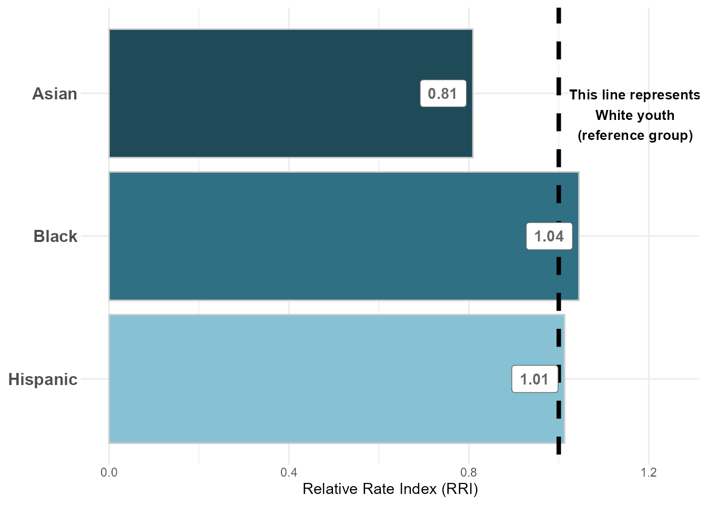
Figure 2: Predicted Probabilities of Petition by Referral Source
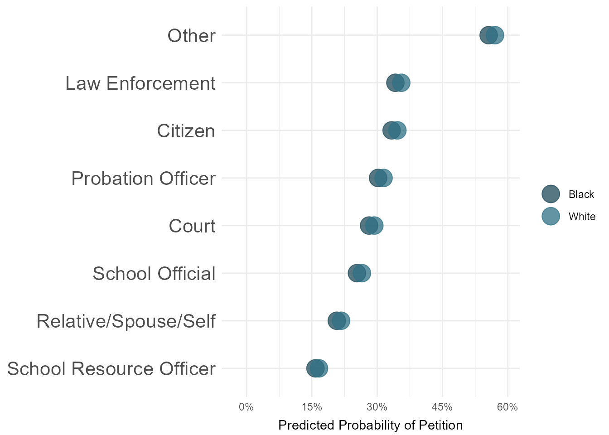
Figure 3: Predicted Probabilities of Petition by CSU
NOTE: We will likely want to exclude CSU’s with small N sizes – I haven’t yet done that.
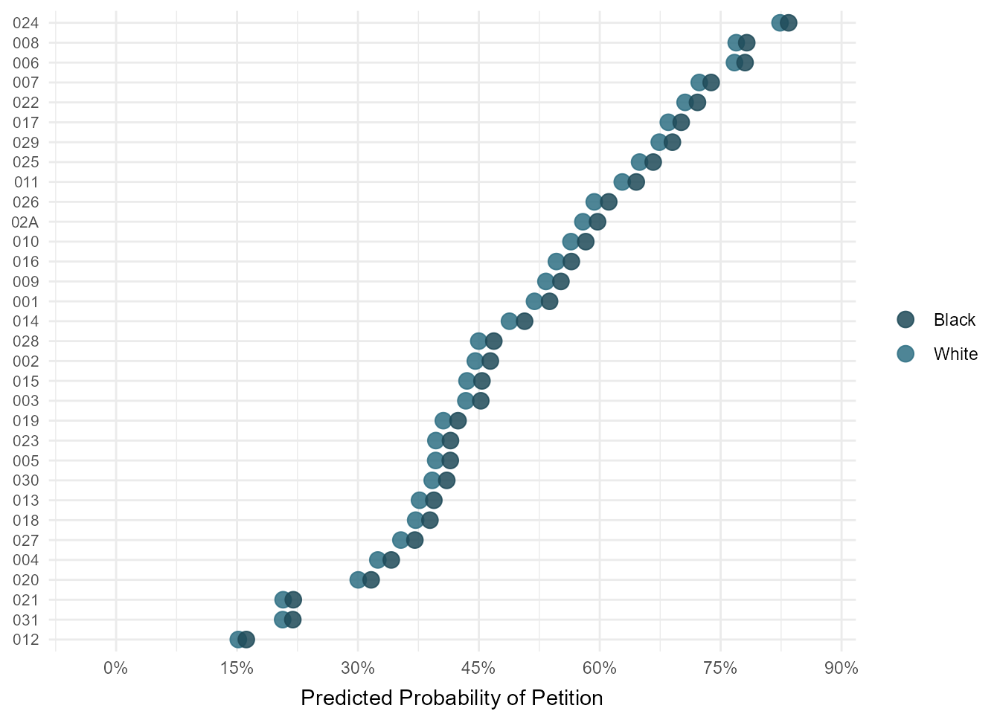
Figure 4: Predicted Probabilities of Petition by Charge Type
Question: Do status offenses have relatively lower predicted probability of diversion b/c they are more likely to be dismissed? This could be a drawback of the current model (where all intake decisions are included and coded into either diversion or not diversion)
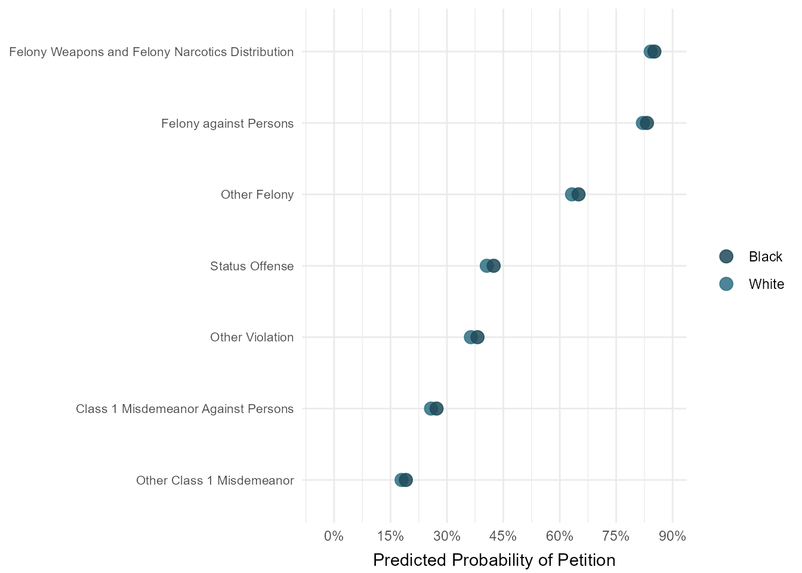
2. Adjusted: Diversion versus Resolved/Dismissed
In the following analysis, the outcome variable is binary – split into diverted (meaning complaint was diverted at intake) and resolved/dismissed (either “complaint unfounded” or “resolved”). All records with other intake complaint decisions are excluded.
NOTE: I am currently running the regression on youth with no prior JJ history – also filtering on intakes labelled as either “Delinquent” or “Status” (we probably need to ask Nina why there are youth with no prior JJ history, but violations). Predictors included in preliminary model are race, gender, age at intake, CSU, referral/petitioner source, category of offense, and year of petition. The outcome variable is a petition flag (where any intake decision other than diversion is coded as ‘0’ – including informal diversion, petition, dismissal, or other)
Another control we could add is something on how rural/urban each county is…
| intake diverted flag num | |||
|---|---|---|---|
| Predictors | Odds Ratios | CI | p |
| (Intercept) | 344742769988.50 | 0.00 – Inf | 0.999 |
| race [American Indian] | 1.00 | 0.00 – Inf | 1.000 |
| race [Asian] | 1.00 | 0.00 – Inf | 1.000 |
| race [Black] | 1.00 | 0.00 – Inf | 1.000 |
| race [Hispanic] | 1.00 | 0.00 – Inf | 1.000 |
| race [Other] | 1.00 | 0.00 – Inf | 1.000 |
| gender [Female] | 1.00 | 0.00 – Inf | 1.000 |
| intake age | 1.00 | 0.00 – Inf | 1.000 |
| csu [002] | 1.00 | 0.00 – Inf | 1.000 |
| csu [003] | 1.00 | 0.00 – Inf | 1.000 |
| csu [004] | 1.00 | 0.00 – Inf | 1.000 |
| csu [005] | 1.00 | 0.00 – Inf | 1.000 |
| csu [006] | 1.00 | 0.00 – Inf | 1.000 |
| csu [007] | 1.00 | 0.00 – Inf | 1.000 |
| csu [008] | 1.00 | 0.00 – Inf | 1.000 |
| csu [009] | 1.00 | 0.00 – Inf | 1.000 |
| csu [010] | 1.00 | 0.00 – Inf | 1.000 |
| csu [011] | 1.00 | 0.00 – Inf | 1.000 |
| csu [012] | 1.00 | 0.00 – Inf | 1.000 |
| csu [013] | 1.00 | 0.00 – Inf | 1.000 |
| csu [014] | 1.00 | 0.00 – Inf | 1.000 |
| csu [015] | 1.00 | 0.00 – Inf | 1.000 |
| csu [016] | 1.00 | 0.00 – Inf | 1.000 |
| csu [017] | 1.00 | 0.00 – Inf | 1.000 |
| csu [018] | 1.00 | 0.00 – Inf | 1.000 |
| csu [019] | 1.00 | 0.00 – Inf | 1.000 |
| csu [020] | 1.00 | 0.00 – Inf | 1.000 |
| csu [021] | 1.00 | 0.00 – Inf | 1.000 |
| csu [022] | 1.00 | 0.00 – Inf | 1.000 |
| csu [023] | 1.00 | 0.00 – Inf | 1.000 |
| csu [024] | 1.00 | 0.00 – Inf | 1.000 |
| csu [025] | 1.00 | 0.00 – Inf | 1.000 |
| csu [026] | 1.00 | 0.00 – Inf | 1.000 |
| csu [027] | 1.00 | 0.00 – Inf | 1.000 |
| csu [028] | 1.00 | 0.00 – Inf | 1.000 |
| csu [029] | 1.00 | 0.00 – Inf | 1.000 |
| csu [02A] | 1.00 | 0.00 – Inf | 1.000 |
| csu [030] | 1.00 | 0.00 – Inf | 1.000 |
| csu [031] | 1.00 | 0.00 – Inf | 1.000 |
| referral source clean [Citizen] |
1.00 | 0.00 – Inf | 1.000 |
| referral source clean [Court] |
1.00 | 0.00 – Inf | 1.000 |
| referral source clean [Law Enforcement] |
1.00 | 0.00 – Inf | 1.000 |
| referral source clean [Probation Officer] |
1.00 | 0.00 – Inf | 1.000 |
| referral source clean [Relative/Spouse/Self] |
1.00 | 0.00 – Inf | 1.000 |
| referral source clean [School Official] |
1.00 | 0.00 – Inf | 1.000 |
| referral source clean [School Resource Officer] |
1.00 | 0.00 – Inf | 1.000 |
| dai [Felony against Persons] |
1.00 | 0.00 – Inf | 1.000 |
| dai [Felony Weapons and Felony Narcotics Distribution] |
1.00 | 0.00 – Inf | 1.000 |
| dai [Other Class 1 Misdemeanor] |
1.00 | 0.00 – Inf | 1.000 |
| dai [Other Felony] | 1.00 | 0.00 – Inf | 1.000 |
| dai [Other Violation] | 1.00 | 0.00 – Inf | 1.000 |
| dai [Status Offense] | 1.00 | 0.00 – Inf | 1.000 |
| date opened year [2016] | 1.00 | 0.00 – Inf | 1.000 |
| date opened year [2017] | 1.00 | 0.00 – Inf | 1.000 |
| date opened year [2018] | 1.00 | 0.00 – Inf | 1.000 |
| date opened year [2019] | 1.00 | 0.00 – Inf | 1.000 |
| date opened year [2020] | 1.00 | 0.00 – Inf | 1.000 |
| date opened year [2021] | 1.00 | 0.00 – Inf | 1.000 |
| Observations | 27350 | ||
| * p<0.05 ** p<0.01 *** p<0.001 | |||
Table 9: Predicted Probablities and Adjusted RRIs, Diverted (compared to Dismissed/Resolved)
TO DO: Double check predicted probability interpretation with categorical variables in model
| race_eth | predicted_probability | std_error | rri |
|---|---|---|---|
| White | 1 | 0e+00 | 1 |
| Black | 1 | 0e+00 | 1 |
| Other | 1 | 0e+00 | 1 |
| Hispanic | 1 | 0e+00 | 1 |
| Asian | 1 | 0e+00 | 1 |
| American Indian | 1 | 1e-07 | 1 |
Figure 5: Adjusted RRI: Diverted (compared to Dismissed/Resolved)
NOTE: Difference is statistically significant for both Asian (<0.05) and Black youth (<0.001)
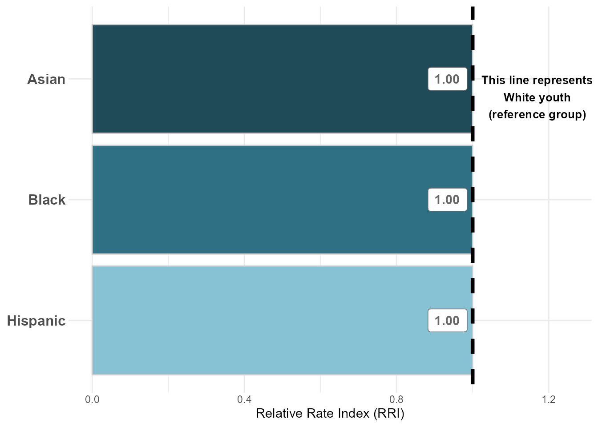
Figure 6: Predicted Probabilities of Diversion by Referral Source
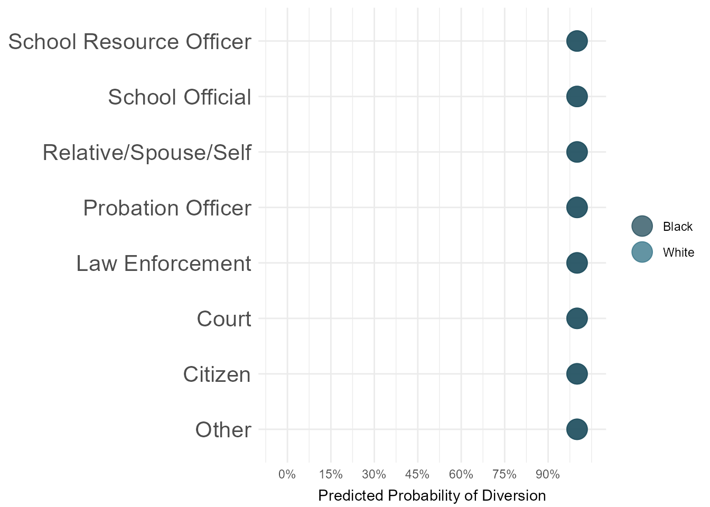
Figure 7: Predicted Probabilities of Diversion by CSU
NOTE: We will likely want to exclude CSU’s with small N sizes – I haven’t yet done that.
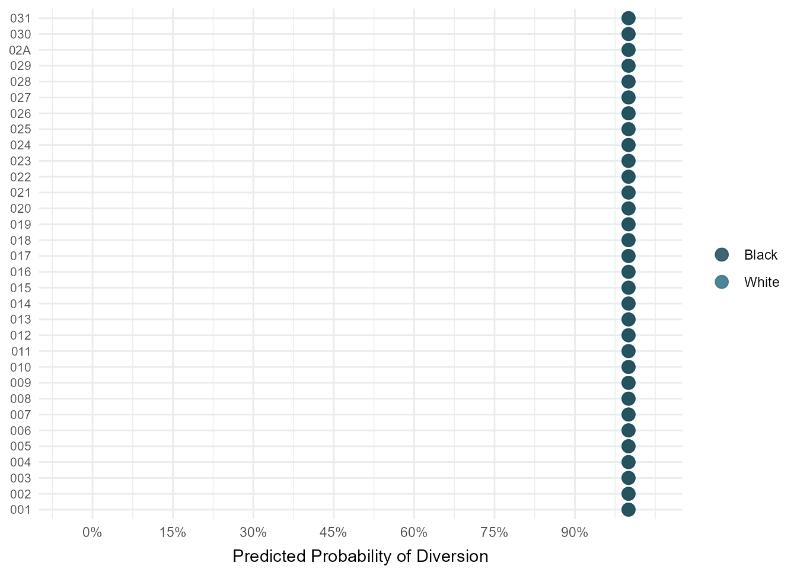
Figure 8: Predicted Probabilities of Diversion by Charge Type
Question: Do status offenses have the lowest predicted probability of diversion b/c they are more likely to be dismissed? How should we treat this so as not to claim that VA diverts too few youth with status complaints – if many are just being dismissed/resolved?
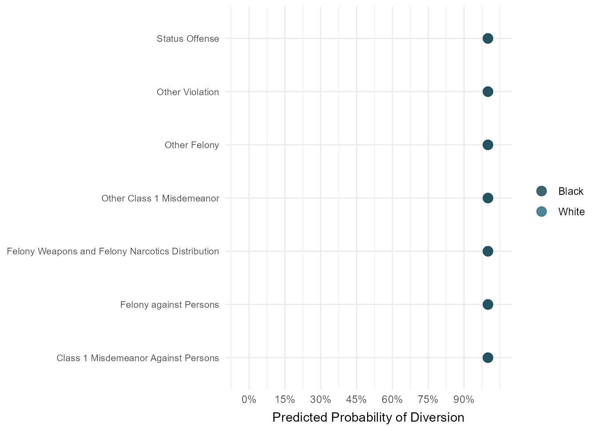
3. Adjusted: Diversion versus Petitioned
In the following analysis, the outcome variable is binary – split into petitioned at intake (excluding court summons) and formally diverted (meaning complaint was diverted at intake). All records with other intake complaint decisions are excluded.
NOTE: I am currently running the regression on youth with no prior JJ history – also filtering on intakes labelled as either “Delinquent” or “Status” (we probably need to ask Nina why there are youth with no prior JJ history, but violations). Predictors included in preliminary model are race, gender, age at intake, CSU, referral/petitioner source, category of offense, and year of petition. The outcome variable is a petition flag (where any intake decision other than diversion is coded as ‘0’ – including informal diversion, petition, dismissal, or other)
Another control we could add is something on how rural/urban each county is…
| intake diverted flag num | |||
|---|---|---|---|
| Predictors | Odds Ratios | CI | p |
| (Intercept) | 0.14 *** | 0.11 – 0.18 | <0.001 |
| race [American Indian] | 0.88 | 0.52 – 1.46 | 0.622 |
| race [Asian] | 1.24 * | 1.03 – 1.50 | 0.022 |
| race [Black] | 0.86 *** | 0.82 – 0.91 | <0.001 |
| race [Hispanic] | 0.95 | 0.88 – 1.02 | 0.145 |
| race [Other] | 1.04 | 0.97 – 1.13 | 0.252 |
| gender [Female] | 1.11 *** | 1.07 – 1.16 | <0.001 |
| intake age | 1.01 * | 1.00 – 1.02 | 0.035 |
| csu [002] | 2.93 *** | 2.48 – 3.48 | <0.001 |
| csu [003] | 3.54 *** | 2.83 – 4.42 | <0.001 |
| csu [004] | 1.71 *** | 1.42 – 2.06 | <0.001 |
| csu [005] | 4.67 *** | 3.82 – 5.73 | <0.001 |
| csu [006] | 0.31 *** | 0.24 – 0.40 | <0.001 |
| csu [007] | 0.49 *** | 0.40 – 0.60 | <0.001 |
| csu [008] | 0.53 *** | 0.43 – 0.65 | <0.001 |
| csu [009] | 2.14 *** | 1.80 – 2.55 | <0.001 |
| csu [010] | 2.55 *** | 2.11 – 3.07 | <0.001 |
| csu [011] | 0.87 | 0.71 – 1.07 | 0.184 |
| csu [012] | 11.70 *** | 9.76 – 14.06 | <0.001 |
| csu [013] | 4.84 *** | 4.01 – 5.86 | <0.001 |
| csu [014] | 2.84 *** | 2.40 – 3.37 | <0.001 |
| csu [015] | 2.66 *** | 2.27 – 3.13 | <0.001 |
| csu [016] | 2.73 *** | 2.31 – 3.24 | <0.001 |
| csu [017] | 1.25 * | 1.03 – 1.52 | 0.023 |
| csu [018] | 2.50 *** | 1.97 – 3.18 | <0.001 |
| csu [019] | 1.66 *** | 1.41 – 1.96 | <0.001 |
| csu [020] | 5.53 *** | 4.66 – 6.59 | <0.001 |
| csu [021] | 8.07 *** | 6.37 – 10.26 | <0.001 |
| csu [022] | 1.50 *** | 1.25 – 1.79 | <0.001 |
| csu [023] | 4.14 *** | 3.49 – 4.93 | <0.001 |
| csu [024] | 0.67 *** | 0.57 – 0.80 | <0.001 |
| csu [025] | 0.97 | 0.81 – 1.16 | 0.710 |
| csu [026] | 1.97 *** | 1.68 – 2.33 | <0.001 |
| csu [027] | 6.20 *** | 5.20 – 7.40 | <0.001 |
| csu [028] | 3.86 *** | 3.10 – 4.82 | <0.001 |
| csu [029] | 1.55 *** | 1.28 – 1.87 | <0.001 |
| csu [02A] | 1.70 *** | 1.31 – 2.21 | <0.001 |
| csu [030] | 3.95 *** | 3.25 – 4.81 | <0.001 |
| csu [031] | 9.87 *** | 8.37 – 11.66 | <0.001 |
| referral source clean [Citizen] |
1.55 *** | 1.37 – 1.75 | <0.001 |
| referral source clean [Court] |
0.23 *** | 0.16 – 0.32 | <0.001 |
| referral source clean [Law Enforcement] |
2.78 *** | 2.54 – 3.04 | <0.001 |
| referral source clean [Probation Officer] |
2.17 *** | 1.68 – 2.79 | <0.001 |
| referral source clean [Relative/Spouse/Self] |
1.84 *** | 1.63 – 2.08 | <0.001 |
| referral source clean [School Official] |
3.03 *** | 2.71 – 3.39 | <0.001 |
| referral source clean [School Resource Officer] |
7.95 *** | 7.12 – 8.87 | <0.001 |
| dai [Felony against Persons] |
0.07 *** | 0.06 – 0.08 | <0.001 |
| dai [Felony Weapons and Felony Narcotics Distribution] |
0.06 *** | 0.05 – 0.08 | <0.001 |
| dai [Other Class 1 Misdemeanor] |
1.76 *** | 1.65 – 1.88 | <0.001 |
| dai [Other Felony] | 0.21 *** | 0.20 – 0.23 | <0.001 |
| dai [Other Violation] | 0.75 *** | 0.70 – 0.80 | <0.001 |
| dai [Status Offense] | 0.37 *** | 0.34 – 0.40 | <0.001 |
| date opened year [2016] | 1.18 *** | 1.09 – 1.28 | <0.001 |
| date opened year [2017] | 1.22 *** | 1.13 – 1.32 | <0.001 |
| date opened year [2018] | 1.48 *** | 1.36 – 1.60 | <0.001 |
| date opened year [2019] | 1.81 *** | 1.67 – 1.96 | <0.001 |
| date opened year [2020] | 1.83 *** | 1.67 – 2.01 | <0.001 |
| date opened year [2021] | 1.79 *** | 1.60 – 1.99 | <0.001 |
| Observations | 57595 | ||
| R2 Tjur | 0.313 | ||
| * p<0.05 ** p<0.01 *** p<0.001 | |||
Table 10: Predicted Probablities and Adjusted RRIs, Diverted (compared to Petitioned)
TO DO: Double check predicted probability interpretation with categorical variables in model
| race_eth | predicted_probability | std_error | rri |
|---|---|---|---|
| White | 0.6654290 | 0.0135895 | 1.0000000 |
| Black | 0.6321479 | 0.0144916 | 0.9499854 |
| Asian | 0.7117894 | 0.0224583 | 1.0696700 |
| Other | 0.6751101 | 0.0149093 | 1.0145487 |
| Hispanic | 0.6530249 | 0.0145192 | 0.9813593 |
| American Indian | 0.6361890 | 0.0618801 | 0.9560584 |
Figure 9: Adjusted RRI: Diverted (compared to Petitioned)
NOTE: Difference is statistically significant for both Asian (<0.05) and Black youth (<0.001)
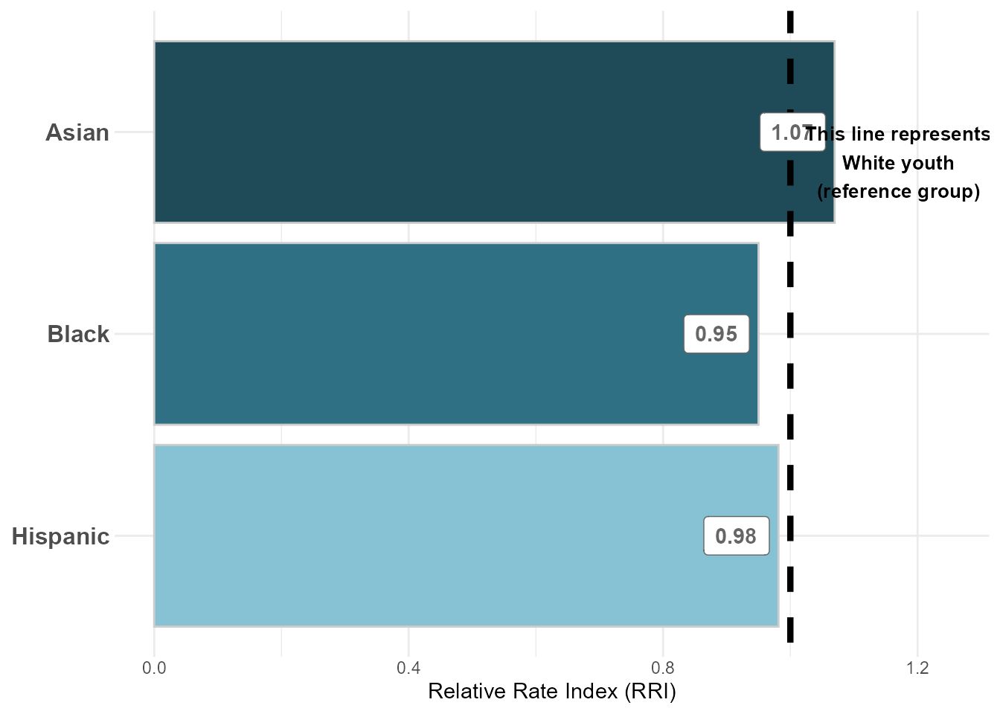
Figure 10: Predicted Probabilities of Diversion by Referral Source
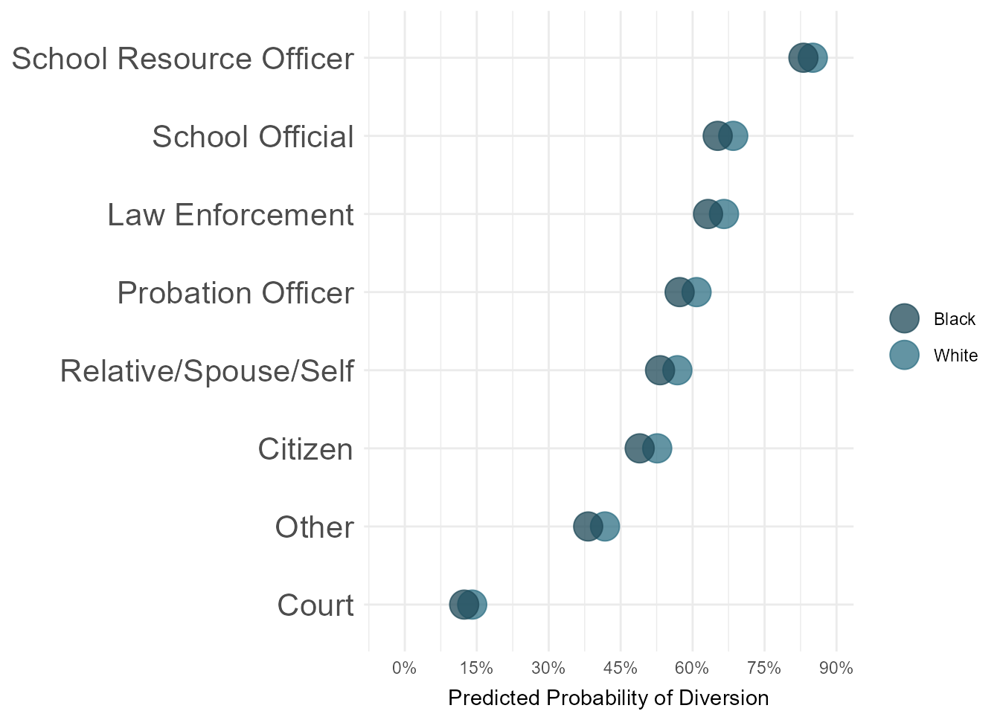
Figure 11: Predicted Probabilities of Diversion by CSU
NOTE: We will likely want to exclude CSU’s with small N sizes – I haven’t yet done that.
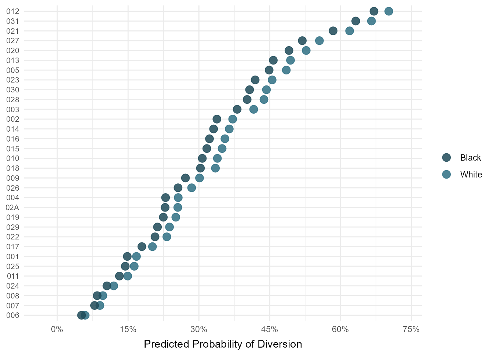
Figure 12: Predicted Probabilities of Diversion by Charge Type
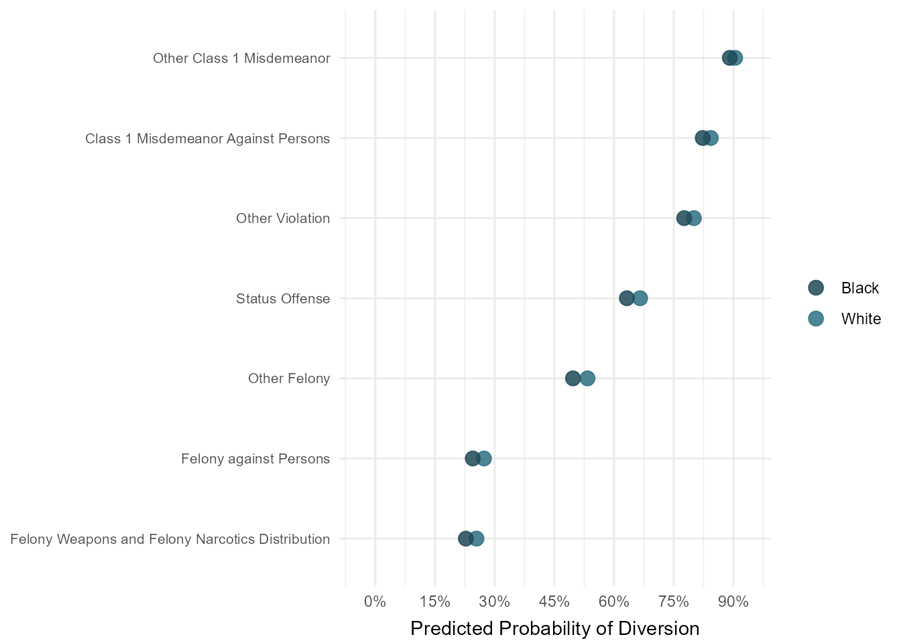